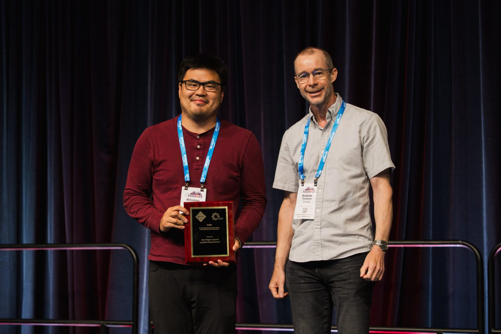

I'm a Staff Research Scientist at Netflix with expertise on causal inference and experimentation.
I enjoy working on highly intersectional teams and problems, and am proud to have published my work in leading journals and conferences in data science, political science, sociology, and economics.
Before joining Netflix, I was a Staff Data Scientist at Apple, where I helped build Siri's A/B testing platform, and a Research Scientist at Facebook, where I worked on missing data problems in ads measurement.
I received my PhD in political science from Princeton University, where I was fortunate to be advised by Rafaela Dancygier and Kosuke Imai. I studied voting decisions and survey methodology and wrote a dissertation on electoral politics in Europe.
My wife, Katherine McCabe, teaches American politics and data science at Rutgers University.
My resume can be found here.
